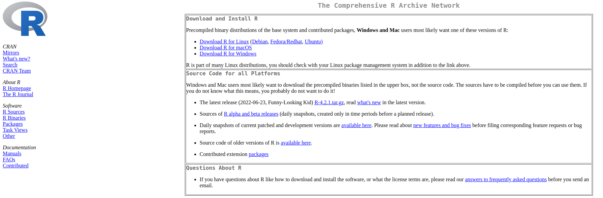
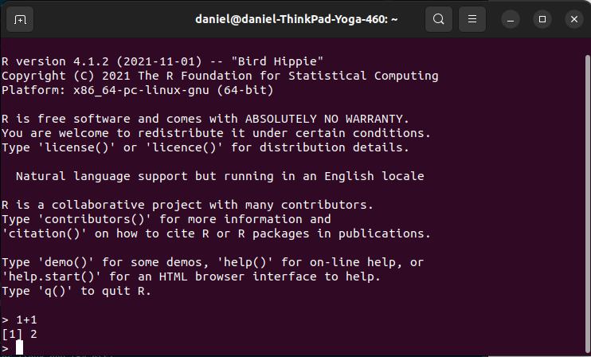
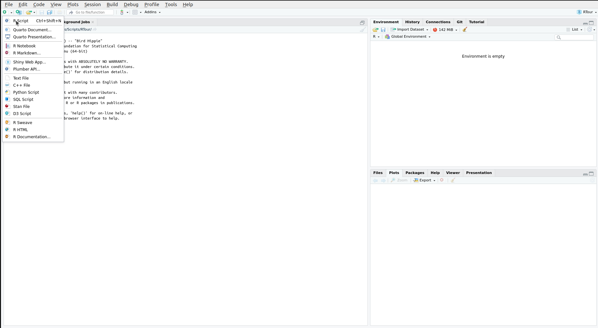
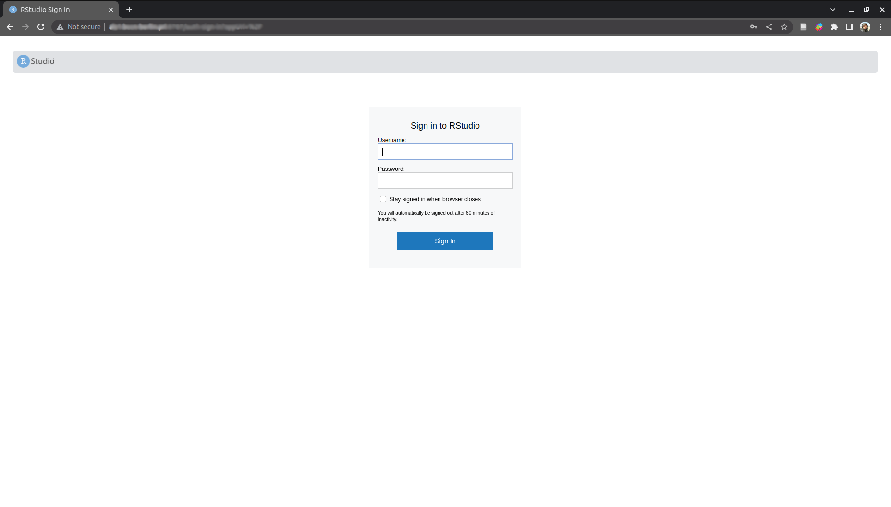

Installing R and RStudio
Installing steps
The first steps to get started with R is installing it on your computer. Depending on the version of your OS (Windows/Linux/MacOS) you are required to download the right R version.
Download the necessary installation files from the R-project.  This website will not only allow you to download R but also provide some additional help in case something should go wrong (which it shouldn’t so don’t worry!). As a Mac-user you should probably check whether you have an M1 processor or an Intel processor and download the appropriate installation file.
Install R! Once the download is finished you can simply install it as explained under the “download link”. Depending on your OS it might look differently.
Windows: click .exe installer
Linux: install via console
MacOS: run the .pkg file using the installer - double clickIn principle you are done with the minimal requirements. You can check if everything works by running R. Depending on your OS this might look different.
Windows: you will go through the menu and execute R. A bright window will open with a console.
Mac: start as any other app.
Linux: just enter “R” in the terminal.
Once you see the R-console you know it works.

Having installed R we want to use a graphical user interface to have a better time working with it. Also this will allow us to use many more features which might be otherwise more difficult to achieve. So for convenience sake and to get a modern interface we want to install the RStudio IDE.
- Go to https://posit.co/download/rstudio-desktop/ and scroll down to see all different available versions. Download the version required by your OS. Again depending on your OS installation might vary:
Windows: Install by start installation by duoble clicking the .exe file.
Linux: Go to the package directory in the terminal and runsudo dpkg -i rstudio_version_name.deb.
MacOS: Just drop the .dmg to your application folder. Done!
RStudio is THE IDE for R and will make your life a lot easier. Further it is possible to integrate also Python and code from other languages (SQL, C++, D3, Stan). It is provided by a public-benefit corporation (PBC) which was formerly known as RStudio but now is called Posit since they offer a large variety of other products besides RStudio. Using the software for our purposes is 100% free!
Check that you have a working internet connection which does not block the download of R
packages.You should now be able to see the IDE window. 
Finally: To be completely prepared for the workshop you can install R-libraries. These are small toolboxes which allow you to perform specific tasks. If you need a library depends on what you want to do and if someone already solved your issue for you (made a library public).
install.packages("ggplot2", "data.table", "readxl", "patchwork", "ggbeeswarm", "lme4")This command will install 6 libraries which we will use next time. There I will also explain how to find new libraries and how to install them with RStudio.
Sidenote: If you are able to have access to our computing server you will also be able to enjoy RStudio in the browser on the server. This means you can keep all you data on the server and work without copying or running a software through an additional window. 